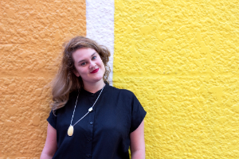

Meeting Log #1
about my mentor
Sarah Veness is a developer for Shopify. She manages, updates, and adapts the customer help site to achieve the optimal user experience. As well, she mentors people as a part of Lighthouse Labs and Canada Learning Code.